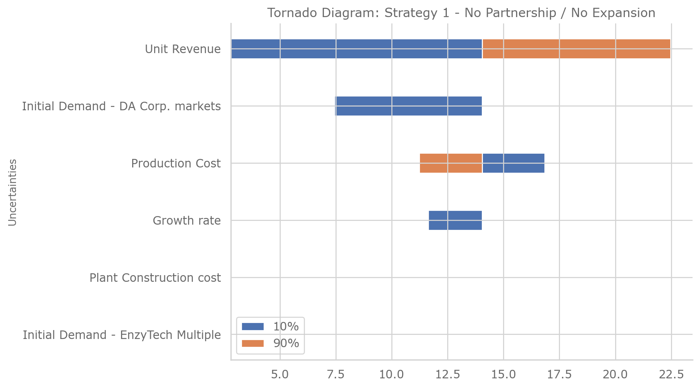
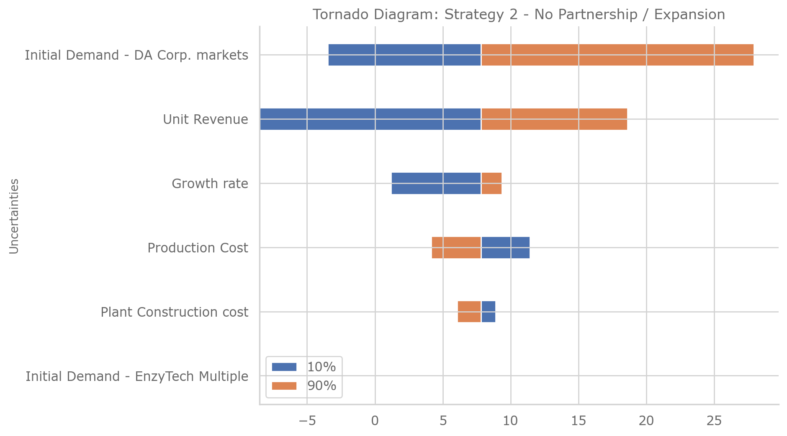
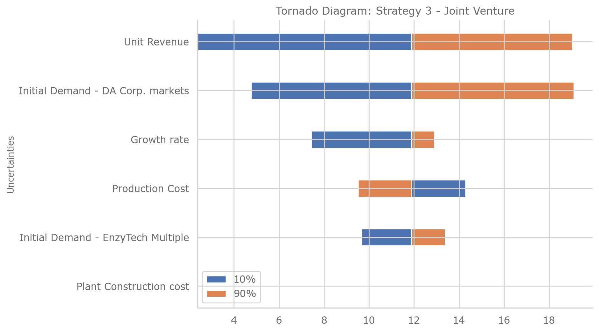
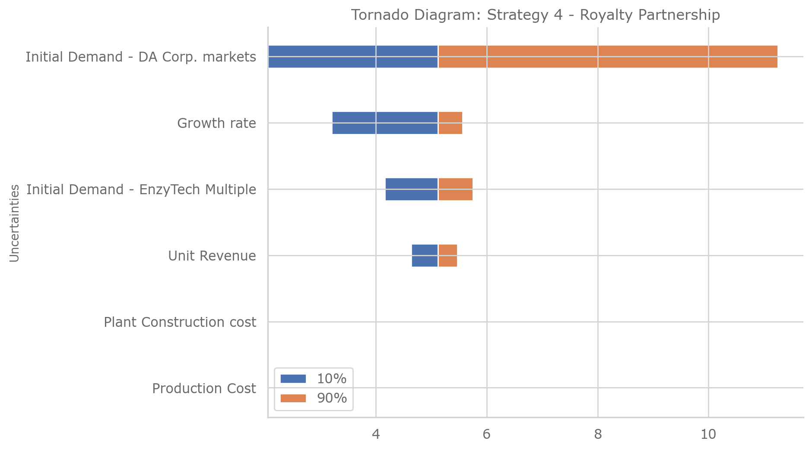
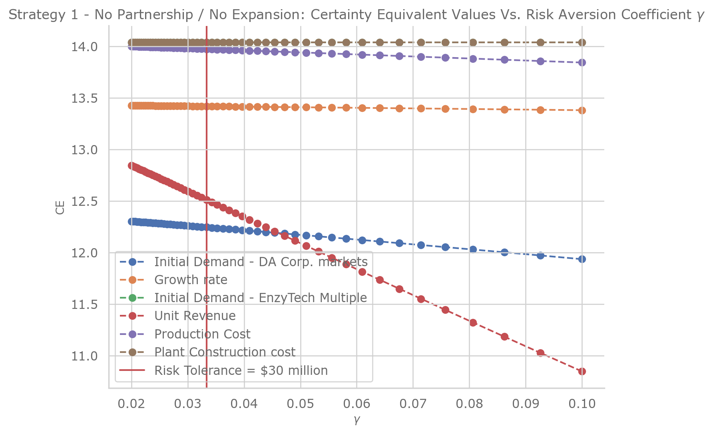
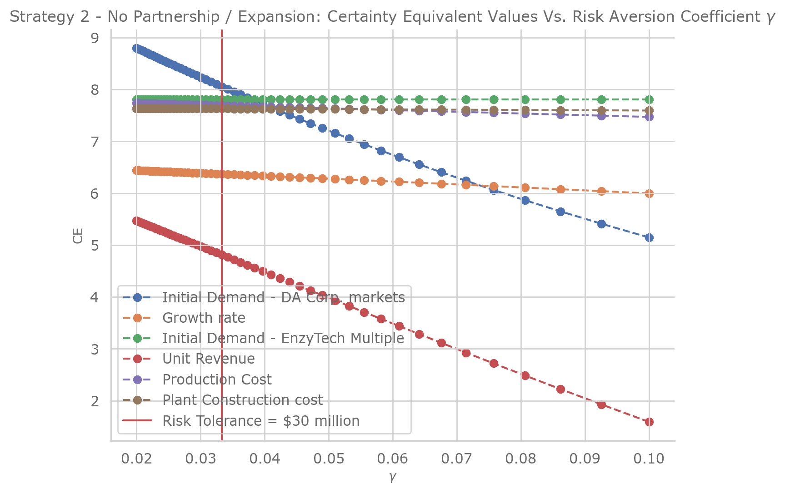
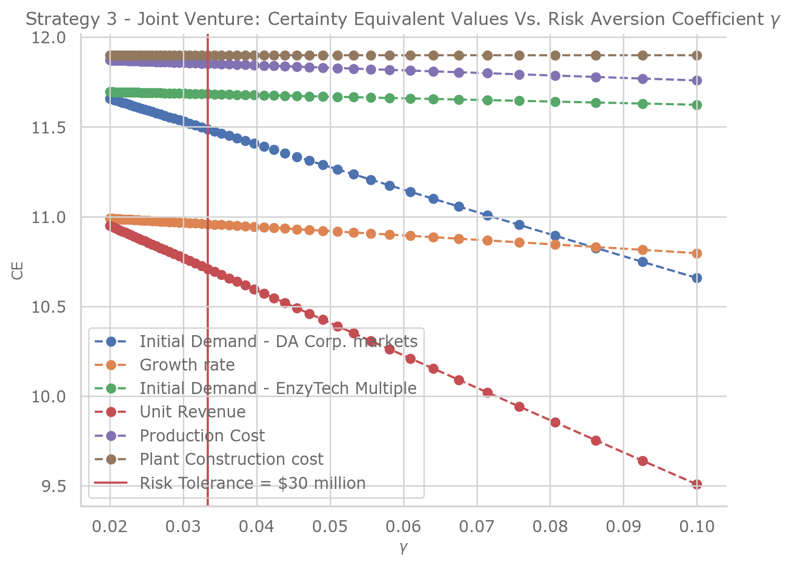
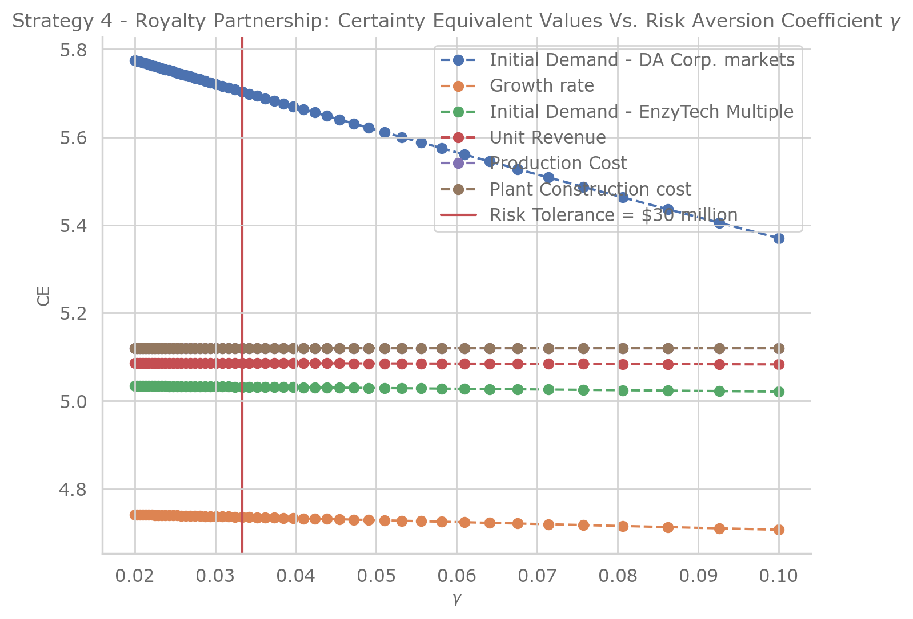

Final Project¶
By: Chengyi (Jeff) Chen
%load_ext autotime
%load_ext nb_black
%matplotlib inline
%config InlineBackend.figure_format = 'retina'
# Graphing
import matplotlib.pyplot as plt
import seaborn as sns
# Plotting Design Configs
sns.set(
font="Verdana",
rc={
"axes.axisbelow": False,
"axes.edgecolor": "lightgrey",
"axes.facecolor": "None",
"axes.grid": True,
"grid.color": "lightgrey",
"axes.labelcolor": "dimgrey",
"axes.spines.right": False,
"axes.spines.top": False,
"figure.facecolor": "white",
"lines.solid_capstyle": "round",
"patch.edgecolor": "w",
"patch.force_edgecolor": True,
"text.color": "dimgrey",
"xtick.bottom": False,
"xtick.color": "dimgrey",
"xtick.direction": "out",
"xtick.top": False,
"ytick.color": "dimgrey",
"ytick.direction": "out",
"ytick.left": False,
"ytick.right": False,
"figure.dpi": 100,
"figure.figsize": (8, 6),
},
)
sns.set_context(
"notebook", rc={"font.size": 10, "axes.titlesize": 12, "axes.labelsize": 10}
)
sns.color_palette(palette="Spectral")
# General
import numpy as np
import scipy.stats as sp
import pandas as pd
from functools import partial
# Ignore warnings LOL
import warnings
warnings.simplefilter("ignore")
The autotime extension is already loaded. To reload it, use:
%reload_ext autotime
The nb_black extension is already loaded. To reload it, use:
%reload_ext nb_black
time: 6.84 s
def ρ(γ):
"""Risk tolerance"""
return 1 / γ
time: 281 µs
def r(γ):
"""Risk Odds"""
return np.log(γ)
time: 276 µs
def u(x, γ: np.array = np.array([0.0]), a: float = 0.0, b: float = 1.0):
"""Assuming user satisifies the Δ property,
calculates the U-values using either a
Piecewise Linear u = a + bx if γ = 0 (Risk-Neutral)
else Exponential u = a + be^(-xγ) U-curve U(x)
Args:
x (np.array): Payoffs of prospects matrix, Shape = (Number of deals, Number of prospects in each deal)
γ (np.array): Risk-aversion coefficients, Shape = (Number of different risk-aversion coefficients for sensitivity analysis), Default = 0.0 (Risk-neutral) [γ > 0: Risk-averse, γ < 0: Risk-seeking]
a (float): Constant for U-curve
b (float): Coefficient for payoff variable
Returns:
np.array:
U-values, Shape = (Number of Risk Aversion Coefficients γ, Number of deals, Number of prospects in each deal)
"""
assert (
x.ndim == 2
), "Payoffs require 2 dimensions, first dim is number of deals, second is number of prospects in each deal."
γ = np.array([γ]) if np.isscalar(γ) else np.array(γ)
return np.array(
[
np.apply_along_axis(
func1d=lambda x, γ=γ: a + b * x if γ == 0 else a + b * np.exp(-x * γ),
axis=-1,
arr=x,
γ=γ_i,
)
for γ_i in γ
]
)
time: 627 µs
def eu(u, p):
"""Assuming user satisifies the Δ property, calculates the
hadamard product of the u values matrix and probabilities
matrix (respective probabilities associated with each
prospect in the u matrix)
Args:
u (np.array): U-values matrix, Shape = (Number of Risk Aversion Coefficients γ, Number of deals, Number of prospects in each deal)
p (np.array): Probabilities of each prospect matrix, Shape = (Number of Risk Aversion Coefficients γ, Number of deals, Number of prospects in each deal)
Returns:
np.array:
E-values, Shape = (Number of Risk Aversion Coefficients γ, Number of deals)
"""
assert (
u.shape == p.shape
), "U-values matrix must be the same shape as the probabilities matrix."
assert (
u.ndim == 3
), "Both matrices must have 3 dimensions, Shape = (Number of Risk Aversion Coefficients γ, Number of deals, Number of prospects in each deal)."
return np.sum(u * p, axis=-1)
time: 405 µs
def u_inv(eu, γ: np.array = np.array([0.0]), a: float = 0, b: float = 1):
"""Piecewise Inverse of Linear if γ = 0 (Risk-Neutral)
else Inverse of Exponential U-curve Certain equivalent
function U^{-1}(x)
Args:
eu (np.array): E[U-Values] / Expectation over u-values, AKA E-values, Shape = (Number of Risk Aversion Coefficients γ, Number of deals)
γ (np.array): Risk-aversion coefficients, Shape = (Number of different risk-aversion coefficients for sensitivity analysis), Default = 0.0 (Risk-neutral) [γ > 0: Risk-averse, γ < 0: Risk-seeking]
a (float): Constant for U-curve
b (float): Coefficient for payoff variable
Returns:
np.array:
Certainty Equivalent values, Shape = (Number of Risk Aversion Coefficients γ, Number of deals)
"""
γ = np.array([γ]) if np.isscalar(γ) else np.array(γ)
for eu_i, γ_i in zip(eu, γ):
if not np.isclose(γ_i, 0):
assert np.alltrue(
eu_i > 0
), "E[U-Values] / Expectation over u-values must be positive for γ > 0 and γ < 0 in order for inverse of Exponential U-curve to work."
assert (
eu.shape[0] == γ.shape[0]
), "E-values first dimension must be the same as γ first dimension for inverse operation."
return np.array(
[
list(
map(
lambda eu, γ=γ_i: (eu - a) / b if γ == 0 else -(1 / γ) * np.log(eu),
eu_i,
)
)
for eu_i, γ_i in zip(eu, γ)
]
)
time: 762 µs
def certainty_equivalent_values_calculator(
u,
u_inv,
x: np.array = None,
p: np.array = None,
N: int = 10,
payout_lb: float = 0.0,
payout_ub: float = 100.0,
γ: np.array = np.array([0.0]),
):
"""Assuming user satisifies the Δ property, calculates the Certainty Equivalent values for a given
payoff matrix `x` and probability matrix `p`. If both matrices
are not provided, random matrices will be sampled to simulate
calculations.
Args:
u (function): U-curve function
u_inv (function): Inverse U-curve function
x (np.array): Payoffs of prospects matrix, Shape = (Number of deals, Number of prospects in each deal)
p (np.array): Probabilities of each prospect matrix, Shape = (Number of deals, Number of prospects in each deal)
N (int): Number of prospects
payout_lb (float): Lower Bound of Payout for simulation, Default = 0.0
payout_ub (float): Upper Bound of Payout for simulation, Default = 100.0
γ (np.array): Risk-aversion coefficients, Shape = (Number of different risk-aversion coefficients for sensitivity analysis), Default = 0.0 (Risk-neutral) [γ > 0: Risk-averse, γ < 0: Risk-seeking]
Returns:
np.array:
Certainty Equivalent values, Shape = (Number of Risk Aversion Coefficients γ, Number of deals)
"""
γ = np.array([γ]) if np.isscalar(γ) else np.array(γ)
# Case 1: Simulator - Both x and p arent provided
if p is None and x is None:
# Preferential probabilities for each prospect
p = np.random.dirichlet(np.ones(N), size=1)
# Payouts for each prospect
x = np.expand_dims(np.random.randint(payout_lb, payout_ub, size=N), axis=0)
# Case 2: Simulator - Only payouts provided
elif p is None:
# Payouts for each prospect
x = np.expand_dims(
np.random.randint(payout_lb, payout_ub, size=p.shape[-1]), axis=0
)
# Case 3: Simulator - Only probabilities provided
elif x is None:
# Preferential probabilities for each prospect
p = np.random.dirichlet(np.ones(x.shape[-1]), size=1)
# Case 4: Calculator - Both are provided
else:
pass
# Check that payoffs and probability assignments are the same shape
assert (
x.shape == p.shape
), "Payoffs `x` and Probabilities `p` must be the same shape=(Number of deals, Number of prospects in each deal)."
# Calculates U-values Shape = (Number of Risk Aversion Coefficients γ, Number of deals, Number of prospects in each deal)
u_values = u(x, γ=γ)
# Reshape p to match U-values shape
p_reshaped = np.array([p for _ in range(u_values.shape[0])])
# Expectation of U values Shape = (Number of Risk Aversion Coefficients γ, Number of deals)
eu_values = eu(u=u_values, p=p_reshaped)
# Certainty equivalent value of deal
ce_values = u_inv(eu_values, γ=γ)
return ce_values
time: 951 µs
1) Tornado Diagrams for Strategies¶
def tornado_diagram(npv, name):
# Max Swing
max_swing = npv.max(axis=1) - npv.min(axis=1)
# Max Swing Squared
max_swing_squared = max_swing ** 2
# Normalized Max Swing Squared
norm_max_swing_squared = max_swing_squared / sum(max_swing_squared)
# Tornado diagram
npv = npv.reindex(norm_max_swing_squared.sort_values().index)
fig, ax = plt.subplots()
ax.barh(
npv.index,
npv["50%"].values - npv["10%"].values,
0.35,
align="center",
label="10%",
left=npv["10%"].values,
)
ax.barh(
npv.index,
npv["90%"].values - npv["50%"].values,
0.35,
align="center",
label="90%",
left=npv["50%"].values,
)
ax.set_ylabel("Uncertainties")
ax.set_title(name)
ax.legend()
plt.show()
return pd.concat(
[
npv,
pd.concat(
[
max_swing,
max_swing_squared,
norm_max_swing_squared,
],
keys=["D", "D^2", "D^2 / sum"],
axis=1,
),
],
axis=1,
)
time: 845 µs
# Strategy 1: No Partnership / No Expansion
strategy1_npv = pd.DataFrame(
data=[
[7.43, 14.04, 14.04],
[11.63, 14.04, 14.04],
[14.04, 14.04, 14.04],
[2.81, 14.04, 22.47],
[16.85, 14.04, 11.23],
[14.04, 14.04, 14.04],
],
index=[
"Initial Demand - DA Corp. markets",
"Growth rate",
"Initial Demand - EnzyTech Multiple",
"Unit Revenue",
"Production Cost",
"Plant Construction cost",
],
columns=["10%", "50%", "90%"],
)
tornado_diagram(
strategy1_npv, name="Tornado Diagram: Strategy 1 - No Partnership / No Expansion"
)

| 10% | 50% | 90% | D | D^2 | D^2 / sum | |
|---|---|---|---|---|---|---|
| Initial Demand - EnzyTech Multiple | 14.04 | 14.04 | 14.04 | 0.00 | 0.0000 | 0.000000 |
| Plant Construction cost | 14.04 | 14.04 | 14.04 | 0.00 | 0.0000 | 0.000000 |
| Growth rate | 11.63 | 14.04 | 14.04 | 2.41 | 5.8081 | 0.012421 |
| Production Cost | 16.85 | 14.04 | 11.23 | 5.62 | 31.5844 | 0.067546 |
| Initial Demand - DA Corp. markets | 7.43 | 14.04 | 14.04 | 6.61 | 43.6921 | 0.093439 |
| Unit Revenue | 2.81 | 14.04 | 22.47 | 19.66 | 386.5156 | 0.826594 |
time: 377 ms
# Strategy 2: No Partnership / Expansion
strategy2_npv = pd.DataFrame(
data=[
[-3.46, 7.81, 27.93],
[1.19, 7.81, 9.36],
[7.81, 7.81, 7.81],
[-8.5, 7.81, 18.6],
[11.44, 7.81, 4.15],
[8.91, 7.81, 6.06],
],
index=[
"Initial Demand - DA Corp. markets",
"Growth rate",
"Initial Demand - EnzyTech Multiple",
"Unit Revenue",
"Production Cost",
"Plant Construction cost",
],
columns=["10%", "50%", "90%"],
)
tornado_diagram(
strategy2_npv, name="Tornado Diagram: Strategy 2 - No Partnership / Expansion"
)

| 10% | 50% | 90% | D | D^2 | D^2 / sum | |
|---|---|---|---|---|---|---|
| Initial Demand - EnzyTech Multiple | 7.81 | 7.81 | 7.81 | 0.00 | 0.0000 | 0.000000 |
| Plant Construction cost | 8.91 | 7.81 | 6.06 | 2.85 | 8.1225 | 0.004396 |
| Production Cost | 11.44 | 7.81 | 4.15 | 7.29 | 53.1441 | 0.028761 |
| Growth rate | 1.19 | 7.81 | 9.36 | 8.17 | 66.7489 | 0.036124 |
| Unit Revenue | -8.50 | 7.81 | 18.60 | 27.10 | 734.4100 | 0.397460 |
| Initial Demand - DA Corp. markets | -3.46 | 7.81 | 27.93 | 31.39 | 985.3321 | 0.533258 |
time: 363 ms
# Strategy 3: Joint Venture
strategy3_npv = pd.DataFrame(
data=[
[4.76, 11.9, 19.1],
[7.44, 11.9, 12.9],
[9.67, 11.9, 13.38],
[2.38, 11.9, 19.03],
[14.28, 11.9, 9.52],
[11.9, 11.9, 11.9],
],
index=[
"Initial Demand - DA Corp. markets",
"Growth rate",
"Initial Demand - EnzyTech Multiple",
"Unit Revenue",
"Production Cost",
"Plant Construction cost",
],
columns=["10%", "50%", "90%"],
)
tornado_diagram(strategy3_npv, name="Tornado Diagram: Strategy 3 - Joint Venture")

| 10% | 50% | 90% | D | D^2 | D^2 / sum | |
|---|---|---|---|---|---|---|
| Plant Construction cost | 11.90 | 11.9 | 11.90 | 0.00 | 0.0000 | 0.000000 |
| Initial Demand - EnzyTech Multiple | 9.67 | 11.9 | 13.38 | 3.71 | 13.7641 | 0.025067 |
| Production Cost | 14.28 | 11.9 | 9.52 | 4.76 | 22.6576 | 0.041264 |
| Growth rate | 7.44 | 11.9 | 12.90 | 5.46 | 29.8116 | 0.054293 |
| Initial Demand - DA Corp. markets | 4.76 | 11.9 | 19.10 | 14.34 | 205.6356 | 0.374502 |
| Unit Revenue | 2.38 | 11.9 | 19.03 | 16.65 | 277.2225 | 0.504875 |
time: 363 ms
# Strategy 4: Royalty Partnership
strategy4_npv = pd.DataFrame(
data=[
[2.05, 5.12, 11.25],
[3.20, 5.12, 5.56],
[4.16, 5.12, 5.75],
[4.64, 5.12, 5.47],
[5.12, 5.12, 5.12],
[5.12, 5.12, 5.12],
],
index=[
"Initial Demand - DA Corp. markets",
"Growth rate",
"Initial Demand - EnzyTech Multiple",
"Unit Revenue",
"Production Cost",
"Plant Construction cost",
],
columns=["10%", "50%", "90%"],
)
tornado_diagram(strategy4_npv, name="Tornado Diagram: Strategy 4 - Royalty Partnership")

| 10% | 50% | 90% | D | D^2 | D^2 / sum | |
|---|---|---|---|---|---|---|
| Production Cost | 5.12 | 5.12 | 5.12 | 0.00 | 0.0000 | 0.000000 |
| Plant Construction cost | 5.12 | 5.12 | 5.12 | 0.00 | 0.0000 | 0.000000 |
| Unit Revenue | 4.64 | 5.12 | 5.47 | 0.83 | 0.6889 | 0.007374 |
| Initial Demand - EnzyTech Multiple | 4.16 | 5.12 | 5.75 | 1.59 | 2.5281 | 0.027060 |
| Growth rate | 3.20 | 5.12 | 5.56 | 2.36 | 5.5696 | 0.059615 |
| Initial Demand - DA Corp. markets | 2.05 | 5.12 | 11.25 | 9.20 | 84.6400 | 0.905952 |
time: 500 ms
2) Sensitivity Analysis¶
def certainty_equivalent_sensitivity_to_risk_tolerance_analysis(npv, name):
"""DA Corp. follows the delta-property and has a risk tolerance of $30 million."""
fig, ax = plt.subplots(1, 1)
γ = np.array([1 / risk_tolerance for risk_tolerance in np.linspace(10, 50, 51)])
for uncertainty, ce_values in zip(
npv.index,
certainty_equivalent_values_calculator(
u,
u_inv,
x=npv.to_numpy(),
p=np.array([[0.25, 0.5, 0.25]] * npv.shape[0]),
N=None,
payout_lb=None,
payout_ub=None,
γ=γ,
).T,
):
ax.plot(γ, ce_values, linestyle="--", marker="o", label=uncertainty)
ax.set_xlabel(r"$\gamma$")
ax.set_ylabel("CE")
ax.set_title(name)
plt.axvline(x=1 / 30, label="Risk Tolerance = \$30 million", c="r")
plt.legend()
plt.show()
certainty_equivalent_sensitivity_to_risk_tolerance_analysis(
strategy1_npv,
name=r"Strategy 1 - No Partnership / No Expansion: Certainty Equivalent Values Vs. Risk Aversion Coefficient $\gamma$",
)

time: 435 ms
certainty_equivalent_sensitivity_to_risk_tolerance_analysis(
strategy2_npv,
name=r"Strategy 2 - No Partnership / Expansion: Certainty Equivalent Values Vs. Risk Aversion Coefficient $\gamma$",
)

time: 574 ms
certainty_equivalent_sensitivity_to_risk_tolerance_analysis(
strategy3_npv,
name=r"Strategy 3 - Joint Venture: Certainty Equivalent Values Vs. Risk Aversion Coefficient $\gamma$",
)

time: 442 ms
certainty_equivalent_sensitivity_to_risk_tolerance_analysis(
strategy4_npv,
name=r"Strategy 4 - Royalty Partnership: Certainty Equivalent Values Vs. Risk Aversion Coefficient $\gamma$",
)

time: 480 ms
3) Value of Free Clairvoyance¶
def value_of_clairvoyance(u, u_inv, x, p):
"""Calculates the Value of Clairvoyance
= Value of Free Clairvoyance - Value of No Clairvoyance
AKA How much more value we get when we have access
to an oracle that can tell us the actual outcome of a
random event.
Args:
u (function): U-curve function
u_inv (function): Inverse U-curve function
x (np.array): Payoffs of prospects matrix, Shape = (Number of deals, Number of prospects in each deal)
p (np.array): Probabilities of each prospect matrix, Shape = (Number of deals, Number of prospects in each deal)
Returns:
float:
Value of the Clairvoyance
"""
# Check that payoffs and probability assignments are the same shape
assert (
x.shape == p.shape
), "Payoffs `x` and Probabilities `p` must be the same shape=(Number of deals, Number of prospects in each deal)."
# Value of Free Clairvoyance
vfc = certainty_equivalent_values_calculator(
u=u,
u_inv=u_inv,
x=np.array([x.max(axis=0)]),
p=np.array([p[np.argmax(x, axis=0), np.array(range(x.shape[1]))]]),
γ=np.array([u.keywords["γ"]]),
)[0][0]
# Value of No Clairvoyance
vnc = np.max(
certainty_equivalent_values_calculator(
u=u,
u_inv=u_inv,
x=x,
p=p,
γ=np.array([u.keywords["γ"]]),
)
)
# Value of Clairvoyance
return np.round(vfc - vnc, 2)
time: 621 µs
for uncertainty_idx in range(6):
strategies = pd.concat(
[
strategy1_npv.iloc[uncertainty_idx],
strategy2_npv.iloc[uncertainty_idx],
strategy3_npv.iloc[uncertainty_idx],
strategy4_npv.iloc[uncertainty_idx],
],
axis=1,
)
strategies.columns = [f"Strategy {idx+1}" for idx in range(4)]
print(
strategy1_npv.iloc[uncertainty_idx].name,
":",
value_of_clairvoyance(
u=partial(u, γ=1 / 30),
u_inv=partial(u_inv, γ=1 / 30),
x=strategies.T.values,
p=np.array([[0.25, 0.5, 0.25]] * 4),
),
)
Initial Demand - DA Corp. markets : 2.74
Growth rate : 0.0
Initial Demand - EnzyTech Multiple : 0.0
Unit Revenue : 0.62
Production Cost : 0.0
Plant Construction cost : 0.0
time: 16.2 ms